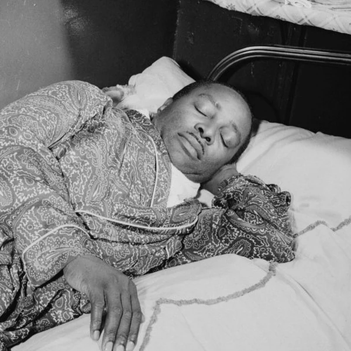
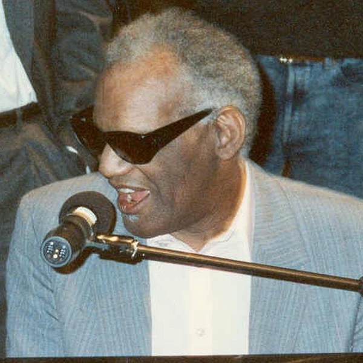
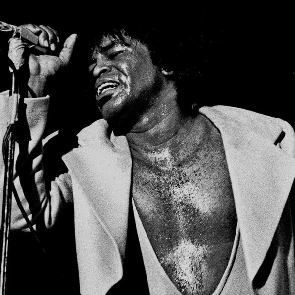
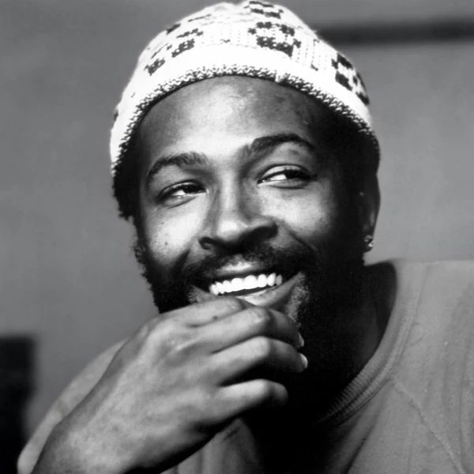
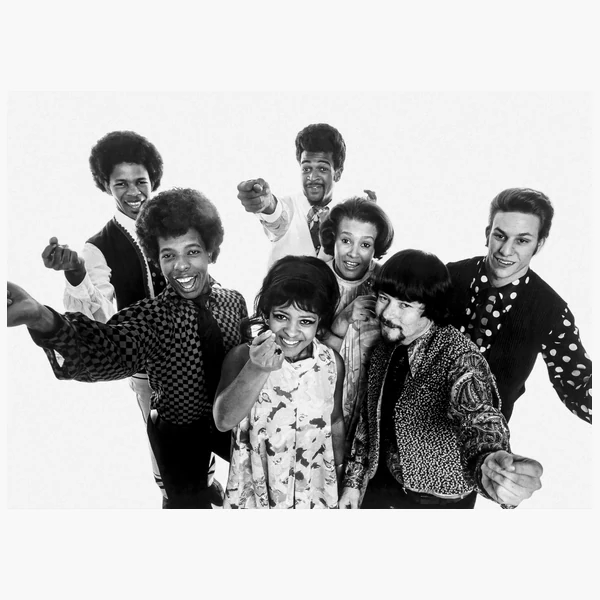

R&B is a broad family of Black American popular music whose sound has changed considerably since the 1940s. The earliest music grouped under the name drew on Blues and Jazz, with Gospel also influencing the way singers used their voices. It was lively, often made for dancing, and built around rhythms that people could follow without much difficulty. Later generations kept that interest in rhythm and vocal expression while finding new ways to put a song together. Some R&B now uses little more than a voice and an electronic beat, while other styles favour rich harmonies and full arrangements. Much of it still has the conversational quality of the older music, with singers stretching a phrase or answering one musical idea with another. There is no single instrument or tempo that makes something R&B. The connection lies in a musical tradition that has kept changing without losing sight of where it came from.
R&B is short for Rhythm and Blues, a name the American record industry adopted in the late 1940s. Before that, companies had used the category race records for music marketed largely to Black audiences. That covered a huge amount of music which did not all sound alike, but the labels were designed around who was expected to buy it rather than how it was played. Rhythm and Blues was a less offensive replacement, and the name soon appeared on record charts and in advertising. It originally described a range of Black secular popular music, including styles that would later be recognised as Rock and Roll or Soul. As the music changed, the abbreviation survived and gradually took on new meanings. Today it can describe either an older style or contemporary vocal music, depending on the context. Changing the name was a step away from an openly segregated marketing category, although it was hardly the end of segregation in the music business.
R&B took shape in the United States during the 1940s, when Black musicians were developing new sounds for growing urban audiences. Migration from the South brought regional musical traditions into contact in cities where clubs and independent record companies were becoming important centres of musical activity. Early R&B drew on Blues and Swing, often with a stronger backbeat and amplified instruments suited to busy dance floors. It helped lay the groundwork for Rock and Roll in the 1950s, although the two labels were not always applied equally to Black and white performers. During the 1960s, Soul brought Gospel influenced singing further into popular music and gave some performers a way to speak directly about civil rights. Funk later placed even greater emphasis on the rhythm section. By the 1980s, electronic keyboards and drum machines were changing production, and the following decade saw closer ties with Hip Hop. These developments did not simply replace the earlier music. They widened the meaning of R&B until it described several generations of sounds with a shared history.
The voice is usually central to R&B, but what a singer does with it can vary as much as the production around them. Phrases are often stretched or moved slightly around the beat, giving the performance a more personal feel than a melody played exactly the same way each time. Singers may move between notes, add short runs or use backing voices to answer and support the lead. Underneath that, the bass and drums establish a groove, sometimes straightforward and sometimes deliberately uneven. Earlier R&B often used piano and horns alongside a live rhythm section, while contemporary productions are more likely to build those parts from samples and programmed sounds. The arrangements can be restrained or densely layered, and the tempo can suit either a club or a quiet room. What tends to carry through is the close relationship between the singer and the rhythm. The two are not separate parts of the song so much as an ongoing conversation.





R&B helped bring Black American musical culture to audiences who had often been discouraged from hearing it by segregated broadcasting and recording practices. Black radio stations and independent labels were important in giving the music an audience, but wider commercial success did not guarantee equal treatment for the people making it. White performers sometimes found it easier to reach mainstream markets with styles that Black musicians had developed. At the same time, the popularity of R&B helped undermine the idea that musical tastes could be kept neatly divided by race. During the Civil Rights era, parts of the tradition became more openly connected with political and cultural self expression, while other performers continued making music mainly about everyday life. Both had a place. Later R&B gave new generations of Black performers a major presence in global Pop, even as arguments over ownership and recognition continued. The industry was often much quicker to embrace the sound than to question the inequalities surrounding it. That tension is part of the genre's history, not a footnote to it.